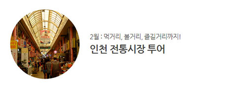
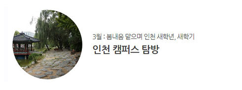

※ 대형마트나 백화점엔 없고 전통시장에만 있는 것! ※
바로 시장 상인들의 ‘정’에서 시작되는 풍성한 덤일 것이다.
장보기는 기본이요 덤으로 볼거리, 즐길거리 풍성한 인천의 크고 작은
전통시장의 매력 속으로 풍덩~

학문과 진리를 탐구하는 지성의 전당이자 낭만과 열정이 넘치는 공간으로
저마다의 매력을 자랑하는 대학 캠퍼스들.
그 중에서도 파릇파릇한 젊음으로 가득한 인천의 캠퍼스를 파헤쳐보자.